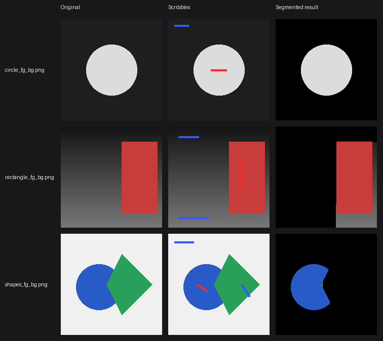
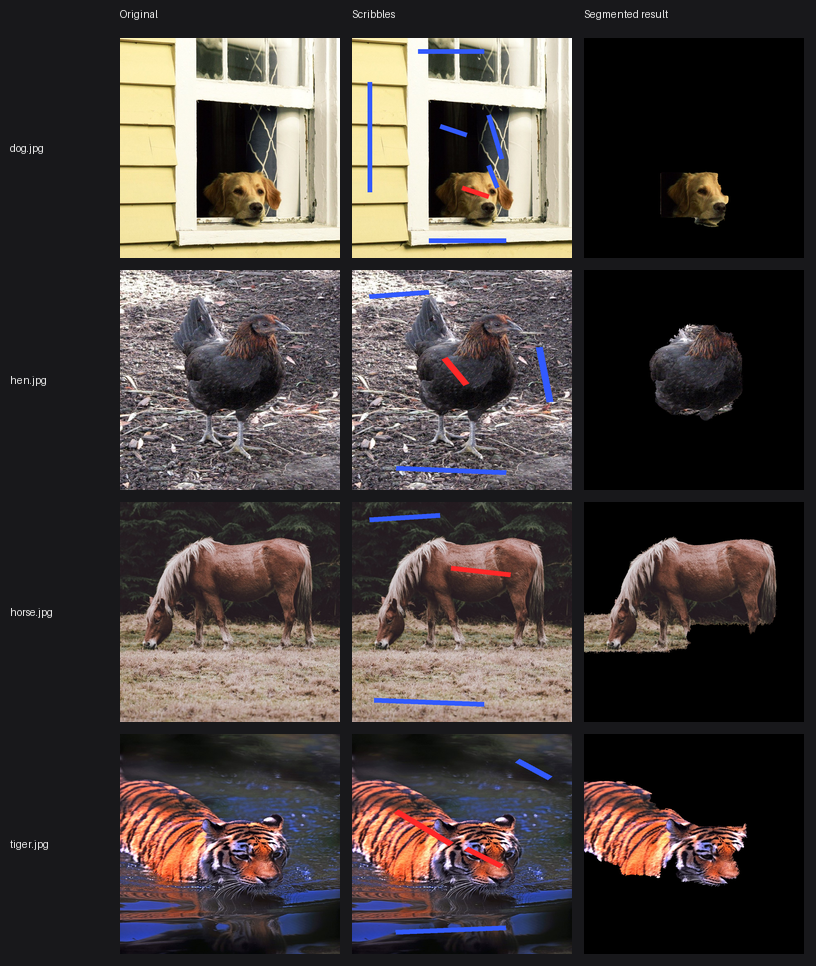

Scribble red for foreground, blue for background — an Edmonds-Karp max-flow / min-cut solve turns a few marked pixels into a clean segmentation mask in under 2 seconds.
Real output of segment()
on each sample image — original, scribbles, and the resulting mask.

Synthetic shapes are the easy case. Here's the same function on four real animal photos — the horse comes out clean, the dog/hen/tiger are only partially captured, an honest result of a single grayscale color model rather than a cherry-picked one.

A JavaScript port of the same Edmonds-Karp min-cut pipeline runs right here — no server involved. Upload any image, scribble, and segment.
Segmentation is framed as a min-cut problem over a pixel graph, following the Boykov-Jolly interactive graph-cut formulation.
Every pixel becomes a node, plus two terminals — a source (foreground) and a sink (background). Neighboring pixels get an edge weighted by color similarity (N-links); every pixel gets an edge to each terminal weighted by how well it matches the scribbled color histograms (T-links).
Pixels you scribble get a hard-constrained terminal edge, so the solver can never relabel a pixel you've explicitly marked.
BFS repeatedly finds the shortest augmenting path from source to sink and pushes flow along it, until no path remains — implemented from scratch in maxflow/edmonds_karp.py.
Whatever's still reachable from the source in the final residual graph is foreground; everything else is background. By the max-flow min-cut theorem, that cut is optimal.
Want the original Python reference implementation instead of the in-browser JavaScript port above? Run it locally: